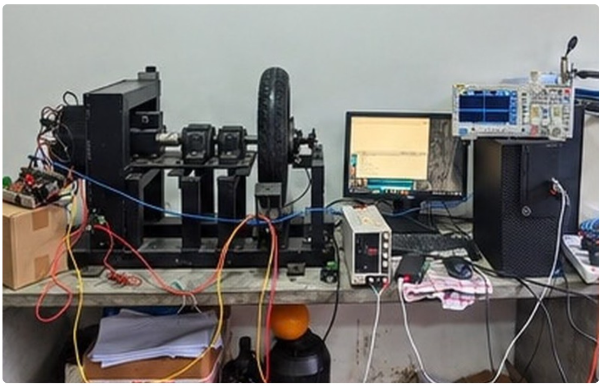
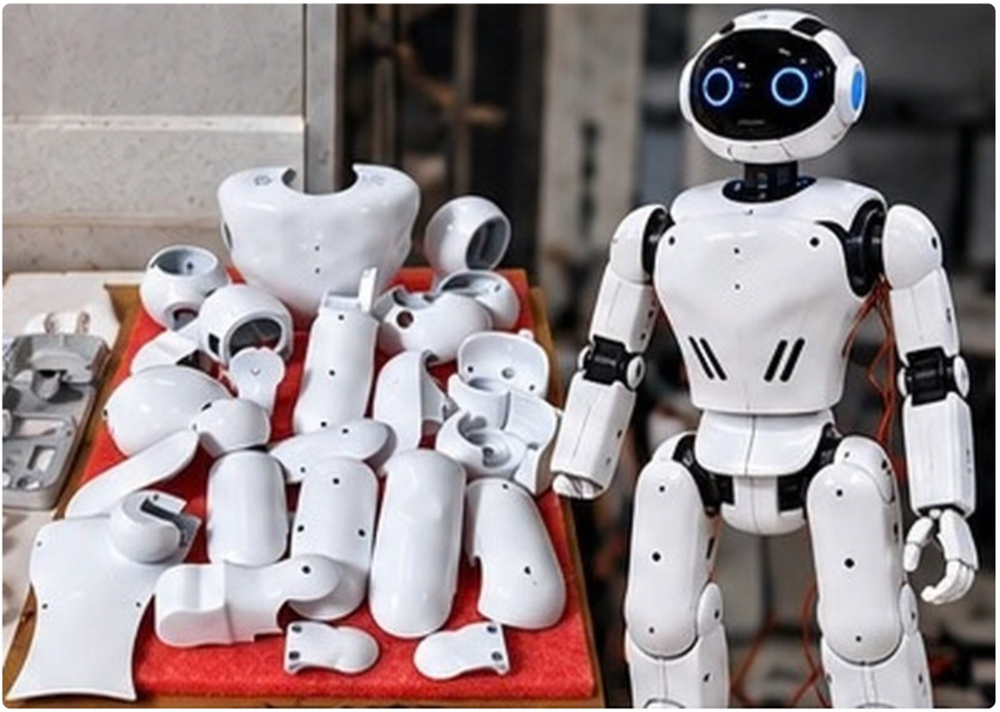
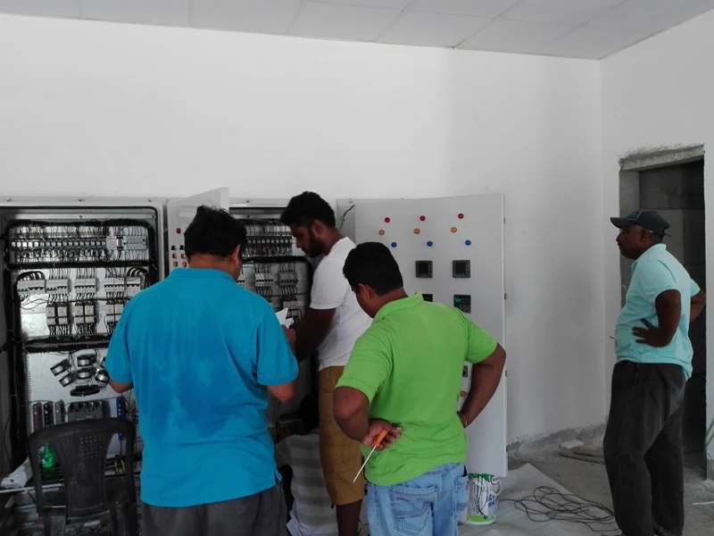
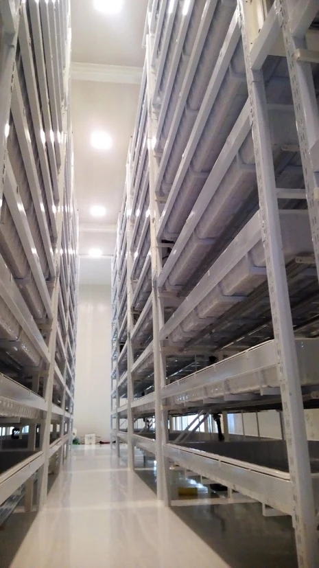
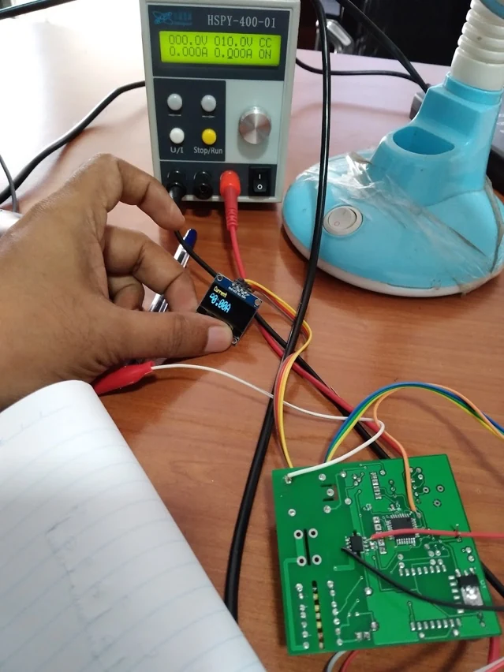
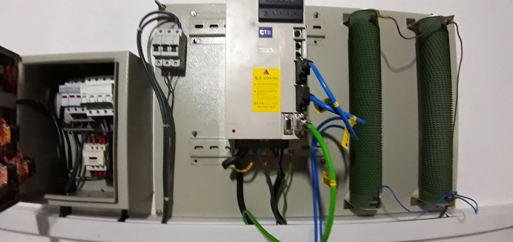
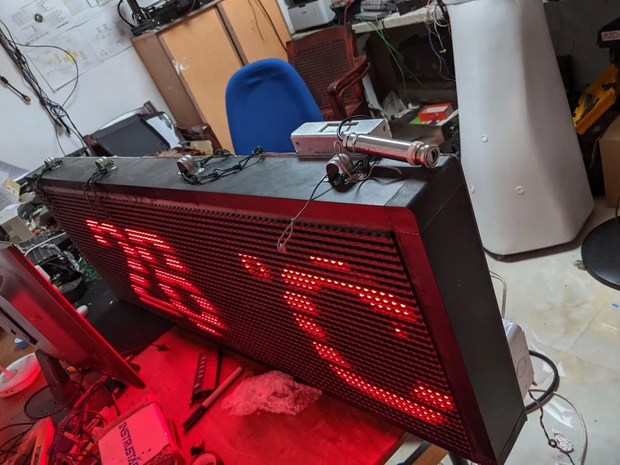
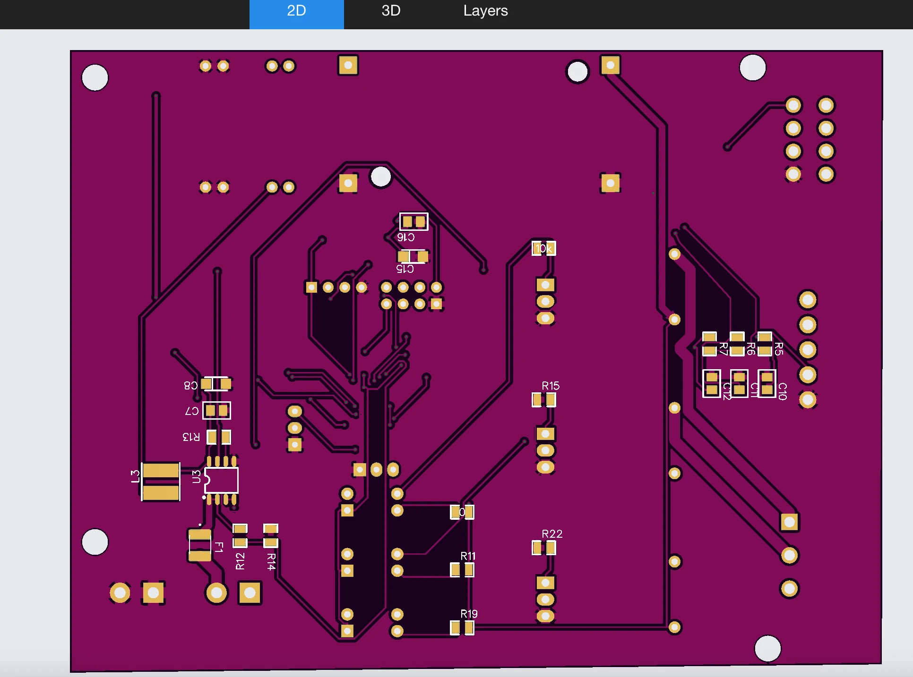

Embedded firmware
Microcontroller firmware, real-time control, communications and device integration.
I'm Damith Nadishan — a Senior R&D Engineer focused on embedded systems, motor control, power electronics, robotics and industrial automation.
25 years of engineering and IT experience, spanning product R&D in Germany, industrial automation projects in the Maldives, and technology development in Sri Lanka.

From software and IT systems to hardware R&D, embedded control and industrial deployments.
I work across the boundary between electronics and software — designing, prototyping, testing and delivering systems that solve real operational problems.
My experience includes energy-conscious motor drives and battery management, humanoid robot prototyping, connected devices, industrial control panels, pump monitoring, process automation and custom electronics products.
I enjoy taking a project from an initial concept through circuit design, firmware, integration, testing and commissioning.
A cross-functional engineering toolkit for connected products, control systems and industrial applications.
Microcontroller firmware, real-time control, communications and device integration.
BLDC and PMSM drive development, FOC, motor sensing and performance characterisation.
Power conversion, gate-drive systems, protection, battery management and energy-aware designs.
PLC logic, electrical panels, pump control, HMI, process monitoring and commissioning.
Connected devices, sensor acquisition, remote monitoring and industrial communication.
Electronic circuit design, PCB development, prototyping, testing and productisation.
Selected work drawn from product development, client engineering and field deployments.

01 / MOTOR R&DDevelopment of motor-drive hardware and firmware, including motor characterisation, sensing, drive-pattern control and efficiency-focused development.

02 / ROBOTICSHardware and software prototyping for a health-sector service robot, including multi-motor power electronics, sensor integration and battery monitoring.

03 / MALDIVESElectrical design, PLC-based control, pump protection, four-stage water-level control and monitoring systems for facilities across six Maldivian islands.

04 / CONNECTED SYSTEMSHardware and software for a connected farm automation system, integrating pump, valve and lighting controllers with a central server.

05 / IoT PRODUCTSPrototype devices for power monitoring, remote pump status, temperature control, wireless connectivity and sensor-data collection.

06 / POWER ELECTRONICSProduct R&D covering energy-saving motor drives, battery management, high-power AC motor control, e-bike drives and infrared heating drivers.

07 / PRODUCT DELIVERYWireless scoreboard control, scale-to-printer interfaces, remote displays, barcode recognition and industrial data-collection products.

08 / PCB DESIGNElectronic circuit design, board layout, prototype assembly and testing for embedded and industrial products.
Professional roles and project experience across IT, product R&D and technology leadership.
Systems administration, software development and IT department leadership.
Product development in motor drives, battery management, process coordination systems, high-power motor control and measurement electronics.
Hardware and software prototyping for humanoid robotics, smart home automation, vehicle tracking and connected farming systems.
Technology development and engineering leadership focused on energy-efficient motor control and connected products.
Four US patent records identified in the supplied portfolio documents: two granted patents and two pending applications.
US patent record. Listed as granted in November 2016 in the supplied portfolio.
Application 14/433,509US patent record. Listed as granted in January 2018 in the supplied portfolio.
Application 14/400,219Patent application identified in the supplied portfolio.
US application 14/400,225Patent application identified in the supplied portfolio.
US application 15/296,779Patent titles, numbers and statuses are reproduced from the supplied portfolio documents and should be checked against official USPTO records before publication. Inventor / co-inventor attribution should also be verified against each record.
For product development, embedded systems, motor control, industrial automation or technology leadership opportunities, get in touch.